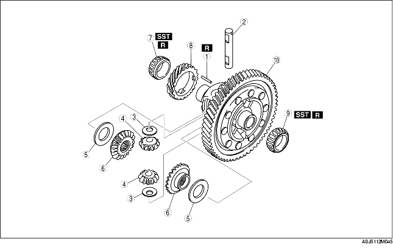
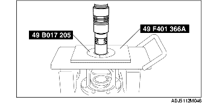
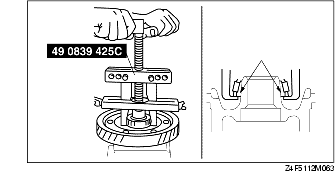

Differential disassembly
B3E051527100102
1. Disassemble in the order indicated in the table.

Bearing (Side Opposite Ring Gear) Disassembly Note
1. Remove the bearing using the SSTs.

Bearing (Ring Gear Side) Disassembly Note
1. Remove the bearing using the SST.
